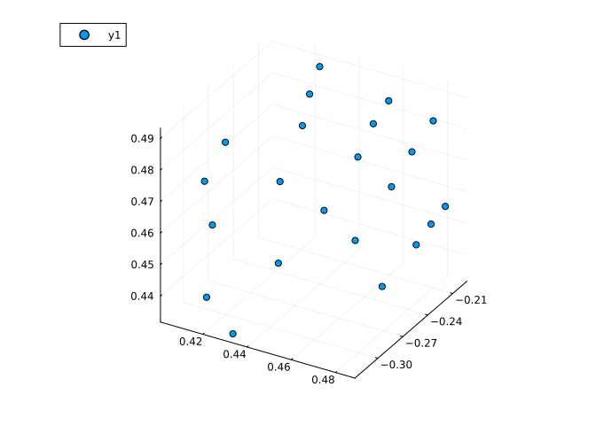
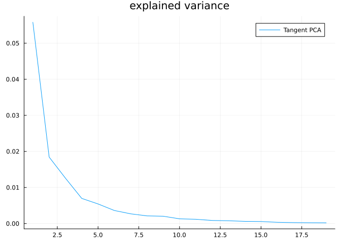
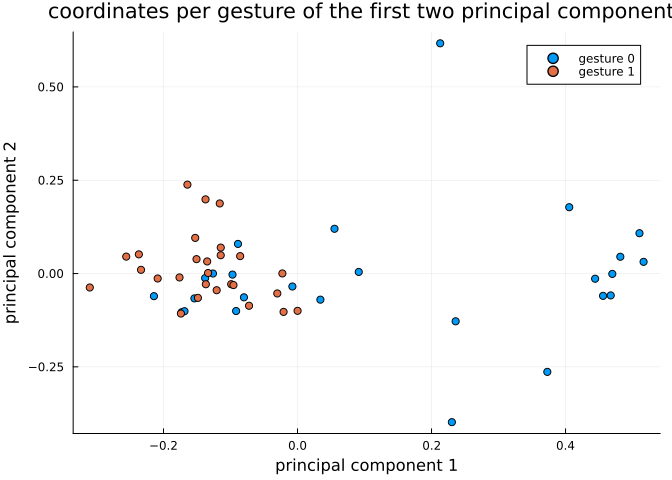
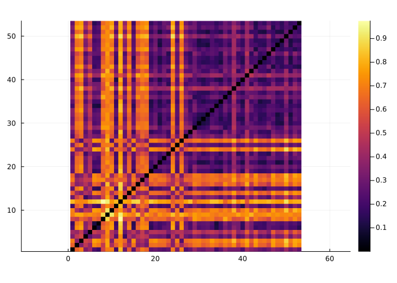

Hand gesture analysis
In this tutorial we will learn how to use Kendall’s shape space to analyze hand gesture data.
Let’s start by loading libraries required for our work.
using Manifolds, CSV, DataFrames, Plots, MultivariateStatsPrecompiling packages...
2879.0 ms ✓ QuartoNotebookWorkerPlotsExt (serial)
1 dependency successfully precompiled in 3 secondsOur first function loads dataset of hand gestures, described here.
function load_hands() hands_url = "https://raw.githubusercontent.com/geomstats/geomstats/master/geomstats/datasets/data/hands/hands.txt" hand_labels_url = "https://raw.githubusercontent.com/geomstats/geomstats/master/geomstats/datasets/data/hands/labels.txt" hands = Matrix(CSV.read(download(hands_url), DataFrame, header = false)) hands = reshape(hands, size(hands, 1), 3, 22) hand_labels = CSV.read(download(hand_labels_url), DataFrame, header = false).Column1 return hands, hand_labelsendload_hands (generic function with 1 method)The following code plots a sample gesture as a 3D scatter plot of points.
hands, hand_labels = load_hands()scatter3d(hands[1, 1, :], hands[1, 2, :], hands[1, 3, :])
Each gesture is represented by 22 landmarks in $ℝ³$, so we use the appropriate Kendall’s shape space
Mshape = KendallsShapeSpace(3, 22)KendallsShapeSpace(3, 22)Hands read from the dataset are projected to the shape space to remove translation and scaling variability. Rotational variability is then handled using the quotient structure of KendallsShapeSpace
hands_projected = [project(Mshape, hands[i, :, :]) for i in axes(hands, 1)]In the next part let’s do tangent space PCA. This starts with computing a mean point and computing logarithmic maps at mean to each point in the dataset.
mean_hand = mean(Mshape, hands_projected)hand_logs = [log(Mshape, mean_hand, p) for p in hands_projected]For a tangent PCA, we need coordinates in a basis. Some libraries skip this step because the representation of tangent vectors forms a linear subspace of an Euclidean space so PCA automatically detects which directions have no variance but this is a more generic way to solve this issue.
B = get_basis(Mshape, mean_hand, ProjectedOrthonormalBasis(:svd))hand_log_coordinates = [get_coordinates(Mshape, mean_hand, X, B) for X in hand_logs]This code prepares data for MultivariateStats – mean=0 is set because we’ve centered the data geometrically to mean_hand in the code above.
red_coords = reduce(hcat, hand_log_coordinates)fp = fit(PCA, red_coords; mean = 0)PCA(indim = 59, outdim = 19, principalratio = 0.9909326925796909)
Pattern matrix (unstandardized loadings):
────────────────────────────────────────────────────────────────────────────────────────────────────────────────────────────────────────────────────────────────────────────────────────────────────────────────────────────────────────────────────────────────────────────
PC1 PC2 PC3 PC4 PC5 PC6 PC7 PC8 PC9 PC10 PC11 PC12 PC13 PC14 PC15 PC16 PC17 PC18 PC19
────────────────────────────────────────────────────────────────────────────────────────────────────────────────────────────────────────────────────────────────────────────────────────────────────────────────────────────────────────────────────────────────────────────
1 -0.0368903 0.0238827 0.00170479 0.00312636 0.0107132 0.0167627 -0.00170311 -0.00406101 -0.000912324 0.0053909 -0.00441297 -0.00255409 0.00366284 -0.0014656 -0.000905057 -0.00381499 -0.00069601 0.00267496 0.000119651
2 0.0207956 -0.0209804 -0.0137847 -0.00840507 0.00249607 -0.00865699 -0.00793757 -0.00777952 -2.01341e-5 -0.0011495 -0.0014384 -5.44642e-5 -0.00632406 -0.0027355 0.000176025 0.000935698 0.00322573 -0.000492959 0.00191038
3 0.0222928 -0.0224143 0.016912 -0.00222628 0.00619561 0.0132609 0.00237581 -0.0027676 0.00273077 -0.00032117 -0.000222851 -0.000525719 0.00112506 0.00490824 -0.0015994 0.001069 0.00172059 0.00383464 0.000850225
4 0.0113997 0.00618571 -0.014747 0.0148016 0.014391 0.00254984 -0.00298394 0.00178435 -0.0046593 -0.00708658 -0.000437059 -0.00084495 0.0014365 0.000584616 0.000293892 0.00039016 0.000692857 -0.0029992 -7.43016e-5
5 -0.0155883 -0.00763328 0.0117215 0.00242943 -0.0239763 0.0052698 -0.000267972 0.00782069 -0.00669916 0.000900097 -0.00506299 -0.00174845 -0.00125548 -0.00206688 0.000744294 0.00082633 0.00102432 0.00177262 0.000979763
6 -0.0306647 0.00193706 -0.0176337 -0.00394795 0.00330603 0.00923317 0.00762234 0.0058689 0.00193245 0.000193213 -0.00185626 -0.000367843 0.00041376 -0.000312667 0.00306004 0.000593674 0.000988804 -0.00100304 0.000273121
7 0.000730592 -0.0299553 -4.06932e-5 0.00789885 0.00525274 -0.00551763 0.0100469 -0.00207354 -0.0112349 -0.00949315 0.00370377 -0.00192963 -0.000599081 -0.00265664 0.00178968 -0.00160666 -0.00105179 0.00201714 -0.00167311
8 -0.0211811 0.0324686 0.0210414 -0.0107205 0.000575859 0.00349616 -0.00348038 0.000910353 -0.00502537 -0.00299354 0.0091103 0.00766684 -0.00857297 0.00207674 -8.77247e-5 -0.000939102 0.00194344 -4.60683e-5 -0.00113903
9 -0.00840162 0.0150977 -0.00729455 -0.00273037 0.0115971 0.00514083 -0.0122389 0.00555706 0.0148718 0.00596239 -0.00446805 0.000219325 9.03485e-5 0.000772031 0.00528502 0.00177448 0.00173131 -0.00031523 0.000256043
10 0.0816231 0.0651395 0.0218039 0.00235645 0.000398507 -0.00865214 -0.00348331 -0.00121748 -0.00122965 -0.00333559 -0.0012132 0.00313805 0.00311703 -0.00114 -0.00251168 0.00346689 -0.00113856 0.000419844 0.00124733
11 -0.000459535 -0.000314385 0.016333 -0.0130818 -0.00936131 -0.00411133 0.00103645 -0.00189184 -0.00424959 0.00403091 0.00124604 0.00723186 0.00204378 -0.00121861 0.00324907 -0.00331338 0.00526715 0.00176263 -0.000185614
12 0.024245 -0.0273911 0.0284738 -0.000375518 -0.00990805 0.00894026 0.00390821 -0.0018737 0.00754408 0.00274424 0.00611513 -0.00134897 -0.00097277 -0.000504093 -0.000370596 0.00260562 -0.00372335 -0.00328455 0.00220143
13 0.0105806 -0.00844668 -0.00606436 0.00315471 0.00512253 0.000419065 -0.00122434 -0.00116753 0.00612993 -0.00309272 0.00784186 0.00671281 0.00990509 0.00662806 0.00204402 0.000343319 0.00102451 0.00280412 -0.00313922
14 -0.00236426 -0.0159689 -0.00189473 -0.011832 0.0144466 0.000260292 0.000314315 -0.00929074 0.00687217 0.00166941 -0.00027774 0.00398783 0.000271814 0.00329793 -0.000263363 4.98693e-5 -0.00104361 0.00140968 0.00339053
15 0.0364354 0.00639471 0.0236847 -0.00568337 -0.00393865 0.011338 -0.00848399 0.00715588 0.000657202 0.00220645 0.000349346 -0.00568887 -0.00267351 -0.000951722 0.000108966 -0.00218792 -0.000145541 0.00151511 0.000852772
16 -0.0263142 0.0218984 0.0129756 0.0102205 0.0085743 0.0120408 0.00955813 -0.0100629 0.00747163 -0.00648014 0.00333417 -0.00394596 -0.000338818 -0.00332035 0.00084523 0.00178931 5.72328e-5 -0.000515712 0.00493038
17 0.0427109 -0.00229204 0.0173594 0.00820206 0.00183888 0.0152876 -0.0157827 0.00519265 -0.00531418 -0.00931485 -0.000167049 -0.000616728 0.00142664 6.96631e-5 0.00534956 -0.0050472 0.00190159 -0.00236507 -0.000142242
18 0.0192115 -0.0216275 0.00461762 0.0170918 0.011682 -0.0133229 0.00967569 0.0059846 0.0127586 -0.00249231 0.00136438 0.00369342 -0.00232739 4.94905e-5 0.00483095 -0.00554584 0.00351014 0.000771369 0.00143993
19 -0.00741404 -0.0320067 -0.00613426 0.023626 0.00978083 0.0129948 -0.00832778 -0.00506129 -0.00158549 -0.00109783 -0.0018456 0.00783761 -0.00348205 -0.00195783 -0.00602621 0.000619883 0.00105944 0.00140862 0.00356807
20 -0.0184429 -0.0039075 0.00874049 0.0154406 -0.00953106 -0.0134523 0.00708701 0.00125247 0.00429049 -0.00139733 -0.00433251 -0.00325694 -0.000422451 0.00731316 0.00407908 -0.00270043 -0.00156082 0.00108584 0.000800839
21 -0.0350294 -0.0042527 -0.00545852 -0.0121003 -0.00521767 -0.00472067 -0.0117331 0.00343274 -0.000661678 -0.00366824 0.00242277 0.000254549 0.000740502 -0.00335874 0.00239636 0.000411833 -0.00141254 0.00266901 0.00241237
22 -0.00479395 -0.0150498 0.010844 -0.0218452 0.0116373 -0.00699243 -0.00530238 -0.00564337 -0.00660162 0.00252237 0.00398493 -0.00305713 -0.000676464 -0.00151153 0.00476099 0.00087105 -0.00304554 0.00274 -0.000172564
23 0.0140338 -0.00477522 0.016309 0.00393724 0.00110972 0.00110099 0.0130888 -0.00645046 -0.00795506 -0.00299058 -0.0044556 0.00255624 0.00661058 -0.00764158 0.00332975 0.000320297 -0.000562074 0.00219955 -0.00046313
24 -0.0168619 -0.00959192 0.012338 -0.00157575 0.00549232 -0.00386924 -0.000407671 -0.0075305 0.00476052 -0.0031302 -0.00271119 -0.00246265 0.000898225 0.000542057 -0.00086497 0.00132095 -0.000701559 0.00305275 -0.000485037
25 0.0170305 0.00895975 0.021553 0.00153737 0.00917551 -0.0033336 0.000882355 0.0105695 -0.00312427 -0.00341317 0.00667147 0.00640149 -0.00172206 0.000704186 -0.000403376 -0.00415547 -0.00398674 0.000133436 0.000391042
26 0.012525 0.00925341 0.0152677 -0.0104748 0.0141871 -0.00619438 0.0142681 0.0102834 -0.00101068 -0.0049393 -0.00152706 0.00251082 0.00369196 -0.000125496 -0.00456158 0.000124779 -0.00230686 -0.00208359 0.00145865
27 -0.0664615 0.00612445 0.00269615 0.00405426 -0.0103616 0.00955781 0.00639435 -0.00206573 0.00205124 -0.00765692 0.00302617 0.00273815 -0.00153707 0.00222856 0.00403532 0.000180307 0.00244199 -0.000423149 0.00354994
28 0.0243778 -0.0161728 0.00972519 0.0237441 -0.00987438 -3.5191e-5 0.00216125 0.0109246 0.000928376 0.00965912 -0.00357308 0.0023989 0.00106593 -0.00353687 -0.00219053 0.00328436 0.000792557 0.00104337 0.00203071
29 0.0202925 -0.00733852 0.00127533 -0.00242129 -0.0127643 -0.0046848 -0.00289251 -0.00521709 -0.00998162 0.0119486 -0.0012386 0.00232316 0.00187864 7.40668e-5 0.00554485 -0.000960484 0.00145872 -0.00163209 0.00263786
30 0.0902508 -0.00675297 -0.00651364 0.00757503 0.00149044 -0.00627305 -0.00289136 -0.0024694 -0.00279988 -0.00219167 -0.00538681 -0.00140042 -0.00409699 0.00353726 0.00373096 0.00302744 0.0012909 0.000361189 0.00124266
31 -0.0125265 -0.00458404 0.0014324 -0.0102034 -0.0035562 0.008974 0.00541021 0.00857863 -0.00162311 0.000187152 -0.00317307 0.00677847 -0.00345331 -0.0012004 -0.0018563 0.00365652 0.00115166 0.000994077 -0.00152397
32 -0.00471216 0.015269 0.0022571 -0.000872261 0.00321183 0.000733345 -0.00585848 0.00903506 0.00747503 0.00074796 0.00176726 -0.00305765 -0.00193057 0.00322401 0.00276781 0.0020197 -0.000110121 0.000708233 -0.000802306
33 0.00279664 0.0297378 -0.00646232 0.00370138 0.00374932 0.0053589 -0.00322107 0.00272613 -0.00652016 -0.00102257 -0.0086609 0.00724325 0.00298443 0.00478475 -0.00222824 -0.00127084 0.00167394 0.00177196 0.00117847
34 0.0240948 0.00410475 -0.0157789 0.0213117 0.000187741 0.00700603 0.00036705 -0.00764191 -0.000592147 0.00495757 0.00718021 -0.00254203 -0.00328549 0.00204899 -0.0011094 -0.00323273 -0.00255544 -0.00376709 -0.00135439
35 -0.00292294 0.0196111 -0.0264027 -0.0120117 -0.0133471 0.00874023 -0.0019061 -0.00810787 -0.00574214 -0.00261626 -0.003325 0.00198751 0.00636538 0.000385955 -0.000489081 -0.00141971 -0.000172275 -0.0026455 0.00128061
36 0.00497137 0.00923618 0.0189741 0.0211995 0.00216902 0.000598335 0.00289807 -0.0038203 -0.00240023 -0.00314229 -0.00449891 -0.00208086 -0.00104164 0.00508452 0.0001759 0.000600836 0.00307329 -0.000309292 -0.000538067
37 -0.00407108 -0.000965494 -0.00520181 -0.011221 -0.00876834 0.00180513 0.00253337 0.0119386 -0.0018289 7.00543e-5 0.00532713 0.000475195 -0.00534147 0.00597082 -0.00199522 -0.000259329 -0.00234364 0.000831482 0.00314181
38 -0.0409684 0.00157236 -0.0276301 0.00205642 0.01903 -0.00421246 -0.00522372 0.00344257 -0.0133197 -0.0031362 0.00347499 -0.00459678 -0.000115357 0.0042439 3.7344e-5 0.0026761 0.0010808 0.00155683 0.00160834
39 -0.0083048 0.00925223 0.00693898 0.000411888 0.000527891 0.00767106 -1.55399e-5 0.00312392 -0.00295166 0.00243473 0.00580701 -0.000810845 0.002499 -0.000159371 0.000343815 0.00378539 0.000737964 0.000561646 -0.00135945
40 0.00391196 -0.00042748 -0.00223774 0.00525808 -0.0167579 -0.000129776 0.00137626 0.00320115 0.00121582 0.000861992 0.00200617 -0.00604519 0.000601263 0.00299773 -0.00010325 -0.00127254 0.00051433 -0.000155515 -0.00186309
41 -0.0355625 0.00284912 0.0134436 -0.00349242 0.00300657 -0.00441743 -0.0116161 -0.00104274 0.00531613 -0.00724113 -0.000980097 0.000560024 -0.00331537 -0.00324308 0.000240898 0.00217052 -0.00102565 -0.00265726 -0.000127356
42 -0.020182 0.0362272 -0.00436257 0.00556816 0.00623163 -0.00244126 0.00605442 -0.00648063 0.000808229 0.00899466 0.00362723 0.000135721 -0.000581005 -0.00346395 0.0052009 -0.0023009 -0.00151427 0.00161739 0.000841559
43 0.0788457 0.0188489 -0.00101346 -0.0232681 0.0010983 -0.00439771 0.00608165 -0.00244658 0.00534945 -0.00226497 0.00231753 -0.00511364 -0.00071 0.000788725 0.00230343 0.00179491 0.00481382 0.000479858 0.00148091
44 0.00875626 0.0266892 -0.00743574 0.0121085 0.00445866 -0.00838341 -0.00944791 -0.00389816 0.0134659 0.00320223 -0.000251303 0.00168598 -0.000911989 -0.00506957 -0.00355979 -0.0027773 -0.00146256 0.00267921 -0.00133965
45 -0.017483 0.000745879 0.000974796 -0.00354821 0.00453537 -0.0132484 0.0028668 -0.00284816 -0.00157216 -0.00128986 0.00412324 0.0042245 -0.00312605 -0.00420373 -0.00320032 0.00281323 0.00420607 -0.0031662 -0.000627928
46 0.0217338 -0.023768 -0.00360594 -0.0222803 -0.00276945 0.0109956 0.00268716 -0.00705496 0.00933311 0.00174959 0.00224365 0.00270949 0.000306641 0.0035598 -0.00622881 -0.00212302 0.00144394 0.00097829 -0.00179246
47 0.0130663 -0.0171451 0.00501523 0.00368038 -0.00557565 -0.00577175 -0.0114936 -0.00679396 -0.00170409 -0.00304033 0.00668113 -9.38977e-5 0.00987714 0.00321279 -0.000572678 0.00226976 -0.000511898 -0.0013139 -0.000313454
48 -0.0308236 0.00943855 0.0285221 -0.00596598 0.00120484 -0.009481 0.00450617 -0.00876959 -0.00190478 0.000975007 -0.00843275 -0.00549873 -0.00192463 0.00463002 -0.00465933 -0.000530555 0.00062853 -0.000261231 0.00103659
49 0.0134992 -0.0159248 0.013198 -0.0079757 0.0345484 0.00664122 0.00191479 0.00563317 -0.00594026 0.010345 -0.00117869 -0.00413694 0.00264686 0.000466009 3.77269e-5 -0.000229102 0.00249103 -0.00404429 0.000264125
50 -0.00404488 0.0164527 0.0110505 0.0194685 -0.00135939 0.00533702 0.00410149 -0.006132 -0.00392998 0.00750324 0.0115306 0.00185288 -0.000371435 0.00343006 0.00314344 0.00666726 0.000399444 0.00152605 1.45583e-5
51 -0.00480161 0.00965518 -0.0336078 -0.000376987 -0.00611868 -0.00292783 0.000785554 0.00607324 0.00343777 -0.00294078 0.00616113 -0.00308787 0.00256747 -0.00304622 0.000867695 -0.000280979 0.00181103 0.00129936 0.0037382
52 0.0125106 0.00112458 -0.00545669 -0.00704662 0.0048955 0.00439335 0.0106975 0.00764076 0.00177372 0.00338771 0.00659251 -0.00226666 0.00588547 -0.00417196 -0.00102178 -0.00213797 0.00218863 -0.00097898 0.00109653
53 0.0450261 -0.000130094 -0.0267694 0.000952158 -0.00389048 0.00867833 0.0102898 -0.00337766 0.00563573 -0.00221631 -0.00402355 0.00691375 -0.00413945 -0.00146863 0.00498973 0.00291744 -0.0018549 -0.00192283 -0.00311404
54 0.0194839 0.0191402 -0.0249307 -0.00712202 -0.00545275 0.00111199 0.0122049 -0.000358583 -5.67111e-5 -0.00163844 -0.0025849 -0.00161993 0.000269489 0.00467128 -0.00271971 -0.000537001 -0.00106656 3.99573e-5 0.00141705
55 0.0181614 0.00627739 -0.0188949 0.0132515 0.00370096 -0.00970427 0.00181042 0.00197229 -0.00795492 0.00729219 0.00557514 -0.00100398 -0.00429751 0.000210553 -0.00607476 -0.00119126 0.00199373 0.00220828 -0.000187903
56 -0.0462415 0.00297675 0.00268608 -0.00603294 0.00823419 -0.00611683 0.00265811 -0.00226442 -0.00320532 0.00734849 -0.00535669 0.00708244 -0.00270547 0.00497923 0.00550176 -0.000162275 -0.00260669 -0.00283111 0.000175436
57 -0.00625196 -0.0143321 -0.00213593 0.00400893 -0.00190912 -0.0132897 -0.0061714 0.00702374 0.00435484 0.00254574 -0.000608027 0.00498667 0.00888351 0.00171546 -0.00101753 0.00159382 -0.00212994 -0.00180689 0.00368912
58 -0.0576529 0.00136672 0.00433994 0.00606304 0.00459736 -0.0029857 0.00294112 0.00883863 0.00485 -0.00130505 -0.0037444 -0.00286155 0.00261549 -0.000672183 0.000335756 0.00449484 0.00234545 0.000394819 -0.00378809
59 -0.0538624 0.00846095 0.0167947 0.00473156 -0.0125362 -0.00779313 -0.0019784 -0.00490445 0.00428265 0.00154419 0.0038401 -0.000644372 0.00306608 0.000705837 -0.00377271 -0.00242056 0.00471558 -0.0036734 -0.000373093
────────────────────────────────────────────────────────────────────────────────────────────────────────────────────────────────────────────────────────────────────────────────────────────────────────────────────────────────────────────────────────────────────────────
Importance of components:
────────────────────────────────────────────────────────────────────────────────────────────────────────────────────────────────────────────────────────────────────────────────────────────────────────────────────────────────────────────────────────────────
PC1 PC2 PC3 PC4 PC5 PC6 PC7 PC8 PC9 PC10 PC11 PC12 PC13 PC14 PC15 PC16 PC17 PC18 PC19
────────────────────────────────────────────────────────────────────────────────────────────────────────────────────────────────────────────────────────────────────────────────────────────────────────────────────────────────────────────────────────────────
SS Loadings (Eigenvalues) 0.0558078 0.0184329 0.0125799 0.00697249 0.00543544 0.00362148 0.00269987 0.00213215 0.00203191 0.00131242 0.00118725 0.000858189 0.000780743 0.000610176 0.000562777 0.000349009 0.000271242 0.00022653 0.00020219
Variance explained 0.476434 0.157362 0.107395 0.0595245 0.0464026 0.0309167 0.023049 0.0182023 0.0173465 0.0112042 0.0101356 0.0073264 0.00666524 0.00520911 0.00480446 0.00297951 0.00231561 0.0019339 0.00172611
Cumulative variance 0.476434 0.633796 0.741191 0.800716 0.847118 0.878035 0.901084 0.919286 0.936633 0.947837 0.957972 0.965299 0.971964 0.977173 0.981978 0.984957 0.987273 0.989207 0.990933
Proportion explained 0.480793 0.158802 0.108378 0.0600691 0.0468272 0.0311996 0.0232599 0.0183689 0.0175052 0.0113067 0.0102283 0.00739344 0.00672623 0.00525677 0.00484842 0.00300677 0.0023368 0.00195159 0.0017419
Cumulative proportion 0.480793 0.639595 0.747973 0.808042 0.854869 0.886069 0.909329 0.927698 0.945203 0.95651 0.966738 0.974132 0.980858 0.986115 0.990963 0.99397 0.996307 0.998258 1.0
────────────────────────────────────────────────────────────────────────────────────────────────────────────────────────────────────────────────────────────────────────────────────────────────────────────────────────────────────────────────────────────────Now let’s show explained variance of each principal component.
plot(principalvars(fp), title = "explained variance", label = "Tangent PCA")
The next plot shows how projections on the first two principal components look like.
fig = plot(; title = "coordinates per gesture of the first two principal components")for label_num in [0, 1] mask = hand_labels .== label_num cur_hand_logs = red_coords[:, mask] cur_t = MultivariateStats.transform(fp, cur_hand_logs) scatter!(fig, cur_t[1, :], cur_t[2, :], label = "gesture " * string(label_num))endxlabel!(fig, "principal component 1")ylabel!(fig, "principal component 2")fig
The following heatmap displays pairwise distances between gestures. We can use them for clustering, classification, etc.
hand_distances = [ distance(Mshape, hands_projected[i], hands_projected[j]) for i in eachindex(hands_projected), j in eachindex(hands_projected)]heatmap(hand_distances, aspect_ratio = :equal)